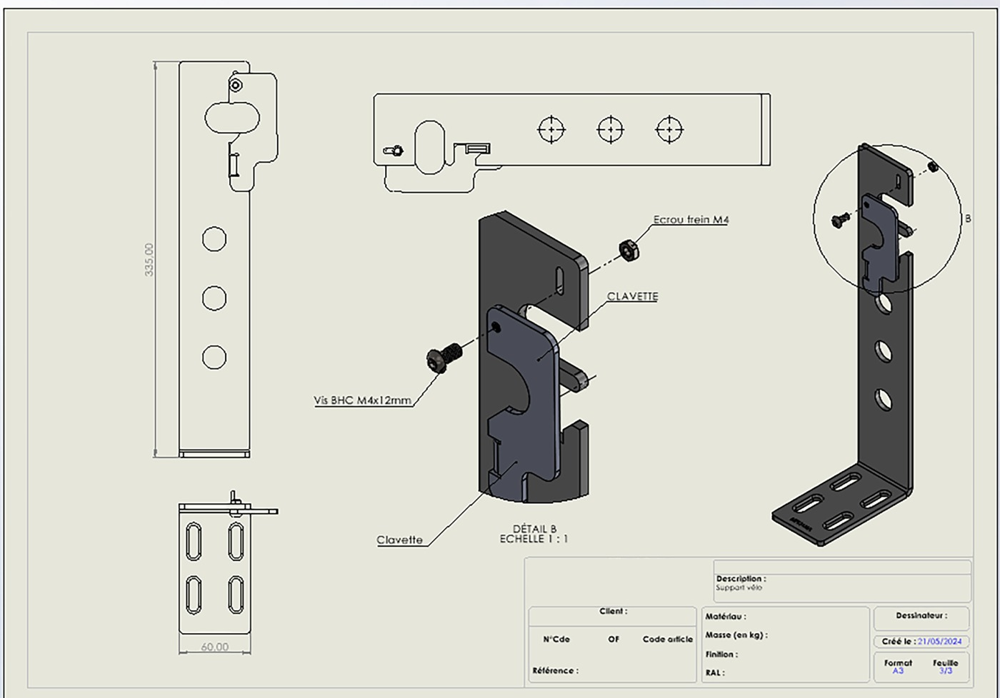

Système de fixation conçu pendant mon stage chez MEDIAMA : un support mural permettant d'exposer un vélo en magasin. L'enjeu de conception était double — rendre la fixation rapide et intuitive pour l'opérateur en réserve (montage/démontage en quelques secondes avec un système à clavette et écrou frein), tout en rendant le décrochage volontairement complexe pour un client ou un visiteur, afin de limiter les risques de vol ou de manipulation du produit exposé.
